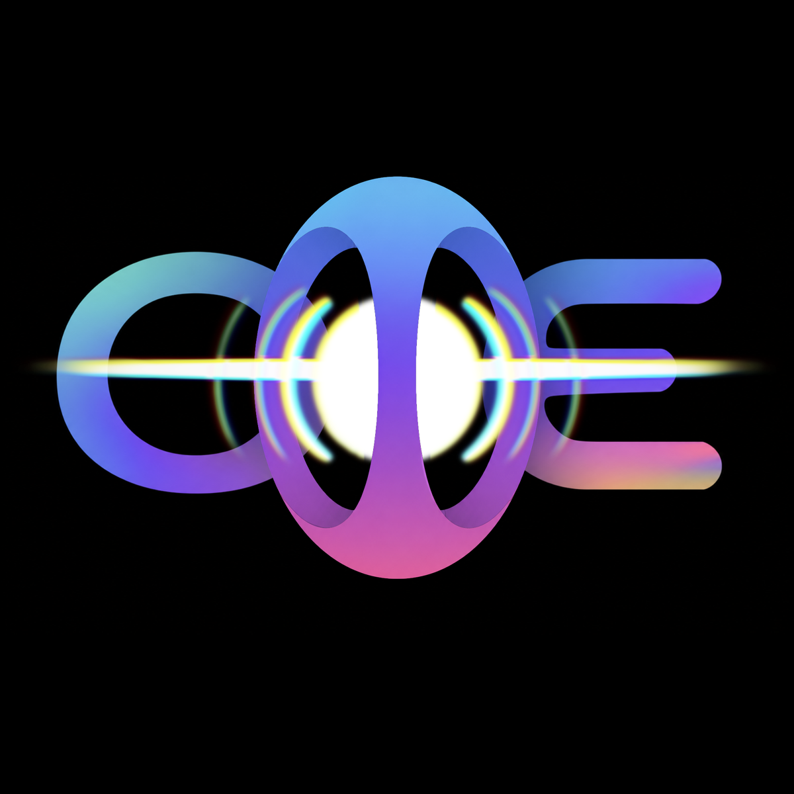

Skip to events

Open Music Event
Discover
Calendar
About
Search events, artists, or places
Near you
⌄
Music brings us closer
The
open
guide to what’s happening.
Open Music Event
Community Calendar
Jump to now
Load more events
Closest to now
0 events
No events in this orbit
Try a different search, catalog, or map area.
Reset browse
＋
−
People
Places
Music
A brighter tomorrow
→